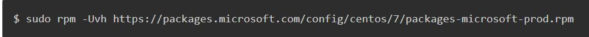
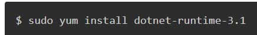
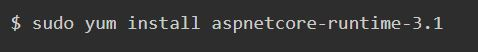
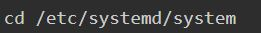
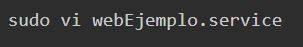
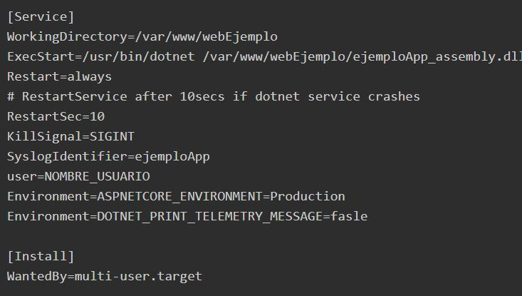
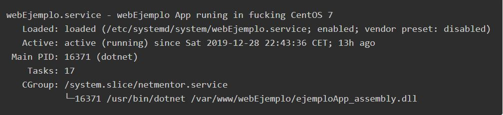

1- Agregar el repositorio de microsoft
Para ello ejecutamos el siguiente comando.
2- Instalación del SDK y runtime de .NET Core
Para instalar el SDK únicamente debemos ejecutar el siguiente comando
para instalar el runtime ejecutaremos un comando muy similar
3- Instalar runtime de ASP.NET Core
Como vamos a ejecutar una página web, vamos a instalar tambien el runtime de ASP.NET Para ello ejecutamos el comando y a funcionar.
4- publicar la aplicación
ejecutamos el siguiente comando en visual studio: dotnet publish -c Release La ruta por defecto, de los ficheros publicados, será la siguiente $Proyecto\bin\Release\netcoreapp3.1\publish\
5- Copiar los ficheros al servidor
Solo necesitamos copiar la carpeta publish
7- Ejecutar nuestra app web
Para ejecutar una aplicacion ASP.NET Core en linux, debemos ir a la ruta donde hemos copiado los ficheros y ejecutar el comando dotnet ejemploApp_assembly.dll
Veremos un mensaje en la terminal el cual nos indica que la app está escuchando en la url http://localhost:5000 -podemos cambiar el puerto en la app manualmente-
8- Creación de un servicio en Linux
Ahora mismo tal y como tenemos todo configurado, debemos ejecutar el comando dotnet cada vez que reiniciamos nuestro servidor y eso no es practico
Para ello vamos a automatizar su ejecución. primero debemos ir a la carpeta donde se encuentran los servicios en linux
Y aquí debemos crear un servicio, para facilitar el sentido le añadiremos una “extensión” con .service, por lo que creamos el fichero:
y pegamos el siguiente contenido - recuerda cambiar la ruta por la de tu aplicación
Ahora debemos habilitar el servicio con el comando: sudo systemctl enable webEjemplo.service
Si todo está correcto, nos saldrá un mensaje como el siguiente
9- Configurar NGINX como proxy inverso (reverse proxy)
Con esto lo que tenemos es nuestra aplicación corriendo en nuestro servidor en localhost. lo cual quiere decir que NO podemos acceder a ella desde el exterior. Para acceder a ella desde el exterior, debemos apuntar nuestro servidor web NGINX a la url en la cual esta escuchando la aplicación, en nuestro caso localhost:5000